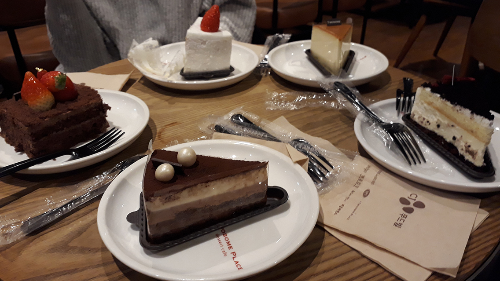
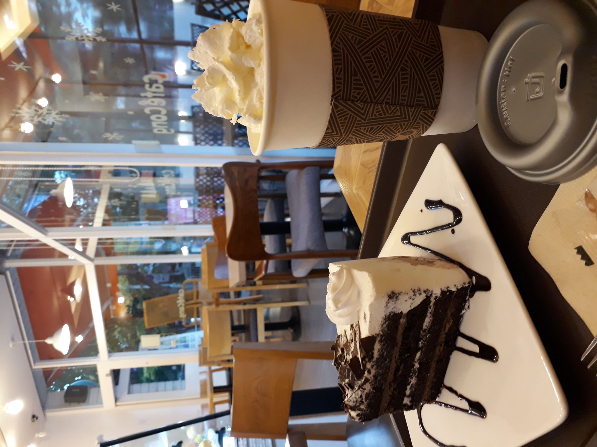
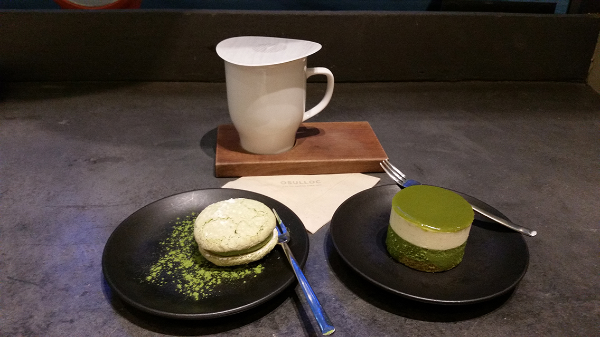
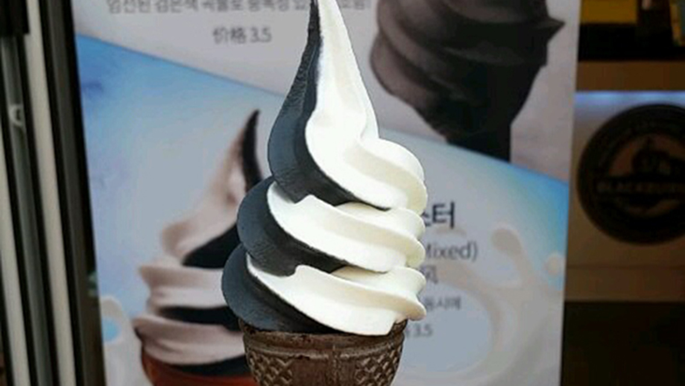
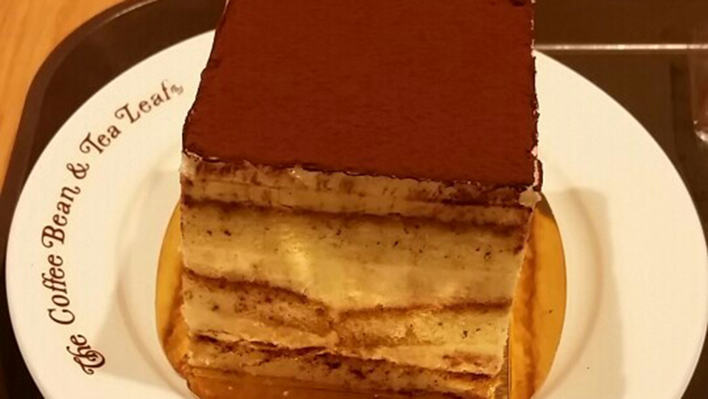
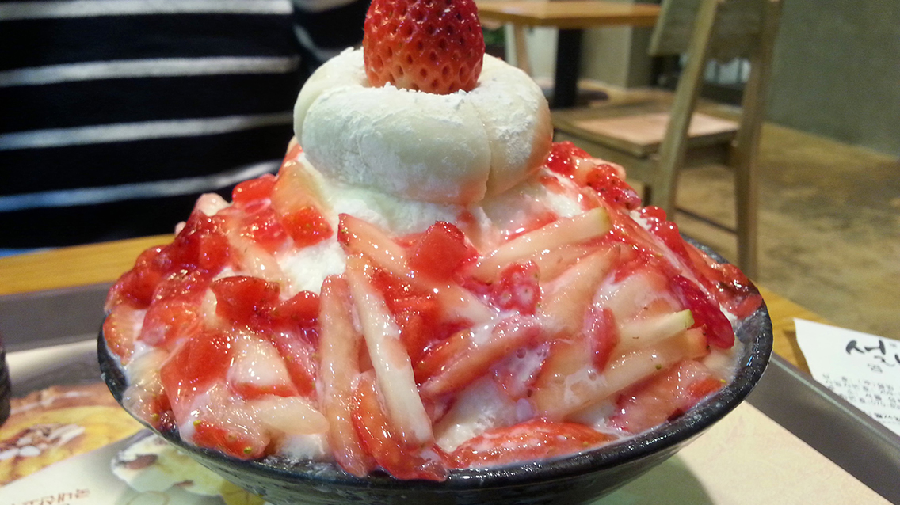

Variety of cakes at Twosome Place (투썸플레이스)
서울시 서대문구 창천동 30-8
30-8 Changcheon-dong, Seodaemun-gu, Seoul, South Korea

Photo Attribution: received permission to use photos from original photographer Kaitlin Beranek | Cropped and resized from original
Chocolate Cake (초코 케이크) at Cafe Cong (콩카페)
서울시 성북구 동선동 2가 148번지
148, Dongseon-dong 2-ga, Seongbuk-gu, Seoul, South Korea

Photo Attribution: received permission to use photos from original photographer Kaitlin Beranek | Cropped and resized from original
Green tea cake (녹차 케이크) at Osulloc Tea House (오설록)
명동 서울 특별시 중구 명동 7 길 12 길
12 Myeongdong 7-gil, Myeongdong 1(il)-ga, Jung-gu, Seoul, South Korea

Photo Attribution: received permission to use photos from original photographer Amy Fu | Cropped and resized from original
Signature Ice Cream (블랙 아이스 크림) at Blackburn's (블랙번즈)
서울특별시 서대문구 대현동 37-60
37-60 Daehyun-dong, Seodaemun-gu, Seoul, South Korea

Photo Attribution: received permission to use photos from original photographer Amy Fu | Cropped and resized from original
Tiramisu (티라미스) at The Coffee Bean & Tea Leaf (김관석의 탐라돈 )"
서울 강남구 삼성동 77-11
77-11 Samseong-dong, Gangnam-gu, Seoul, South Korea

Photo Attribution: received permission to use photos from original photographer Amy Fu | Cropped and resized from original
Strawberry Bingsoo (딸기 빙수) at Sul-bing (설빙)
서울특별시 성북구 안암동 5가 102-64번지 2층
2nd Floor, 102-64, Anam-dong 5-ga, Seongbuk-gu, Seoul

Photo Attribution: photographed by me, Jeongmin Ham | Cropped and resized from original